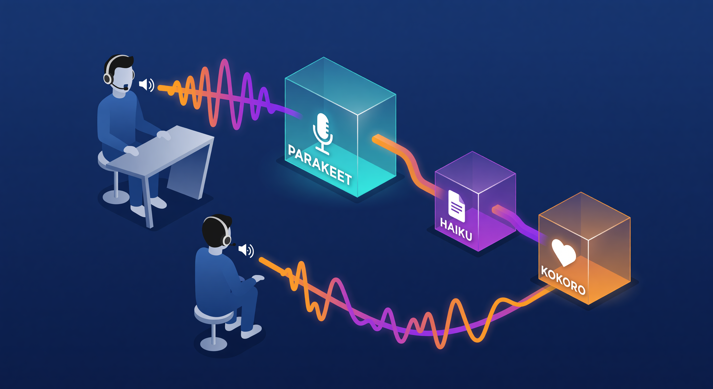

Fiskaly × neob.ai · Agentic Economy
Quit chatting
with your agents
and get them to work for you
Voice. A self-learning meta harness. Agents that ship work while you do something else.
Andrew Demczuk, MSc · OpenClaw Contributor · Vienna, 29 Apr 2026
github.com/ademczuk · openclaw.net
Since 2001
The lights have been off
for twenty-five years.
In 2001 we put robots on assembly lines and turned the lights off. Foxconn hit 85% lights-out at their Taiwan battery plants. Siemens Amberg ships at ~11 defects per million. Tesla Berlin still has humans on final assembly.
"Same thing is happening to code right now."
— Dan Shapiro coined "the dark factory" for AI software. StrongDM is shipping production code with no hand-coded software engineering.
Where you are
Five levels of automation.
Many teams are at level 2.
A self-driving-car ladder for AI coding (Dan Shapiro). Where you are tells you what to fix.
L0
Spicy autocomplete
Smarter Stack Overflow. You write every line.
L1
Coding intern
Cruise control for boilerplate.
L2 — you are here
Junior dev
Pair programming. One hand on the wheel.
L3
AI majority
Eyes on the road. You review every PR.
L4 — this talk
Sleep at the wheel
Harness runs overnight. Wake to merge.
L5
Dark factory
No human approval. Production ships itself.
The Cost
You typed 4,000 words yesterday.
Your agent shipped nothing.
Re-paste the context. Re-frame the prompt. "No, not like that." We've turned the smartest tool we own into a chat partner that needs constant supervision. The interface itself became the work.
What you actually do all day
- Re-paste the same context into a fresh window
- "No, not like that" · "try again" · "closer"
- Lose the thread, scroll back, reframe
- Forget the original ask halfway through
What got shipped without you
nothing
A colleague would have left by now.
The shift
Stop conversing.
Start commissioning.
A colleague gets a brief and walks away. You don't sit on Slack watching their cursor blink. So why are you doing it with your agent?
Chatting
- • Type, wait, read, type again
- • Context evaporates between turns
- • You are the loop
- • Output ends when you stop typing
Commissioning
- • Brief, criteria, deadline, walk away
- • Memory persists across runs
- • The harness is the loop
- • Output lands while you sleep
A brief is a contract. A chat is a hostage situation.
Interface
Talk to it.
Have it talk back.

Parakeet v3 · :5093
Speech-to-text. Local. Sub-second.
Anthropic Haiku · claude-haiku-4-5
Fast path via clawfish. Short turns stay quick. Hard work hands off to Opus.
Kokoro · :5094
Text-to-speech. Local voice. Sub-second when GPU is free.
My actual rig, not a demo. Real stack, real ports, runs on Vienna RTX 5090. While I cook, I brief. Caveat: if the GPU is loaded for critic work, voice goes offline. The honest version of always-on.
Live demo · ~60 sec
Watch this.
I'm going to pin Discord on the projector, call Meridian, give him a brief out loud, and walk back to this slide. By the time I'm done with the next slide, his reply will be in my ear.
The brief I'll say
"Meridian, summarise the Vienna venue email in three lines. Reply by voice."
What he'll do
Read the email out of his memory, draft the summary, run TTS, drop the audio into the Discord voice channel.
If the demo gods say no
Venue WiFi over Tailscale can be fragile. If voice fails, he'll DM the summary instead. The point still lands.
No fabricated demos. If it breaks, you see it break. That's the talk too.
From Karpathy & the wild
Memory is a 7-level ladder.
Most agents stop at level 1.
L1
Auto memory
Claude's own scratchpad. Implicit, fragile, where most people stay.
L2
CLAUDE.md / AGENTS.md
A single rule book. Powerful, until it bloats and pollutes context.
L3
State files
mission · requirements · roadmap · state. The index pattern.
L4
Obsidian + index — the sweet spot for most personal agents
Vault → wiki → index → article. Karpathy's LLM knowledge base. Free, fast, scales to thousands of docs.
L5
Naive RAG
Chunk · embed · vector search. Works at scale. Misses relationships.
L6
Graph RAG
LightRag, Graphiti. Entities + relationships. Roughly 3x improvement over naive RAG on diversity metrics (arXiv:2410.05779).
L7
Agentic RAG
Multimodal. Top-of-funnel router decides which path to query. Production team scale.
Atlanta workhorse
Anismin.
Atlanta. Always on.
Claude Opus 4.7 in AnisminOS, mounted at /workspace. Identity stack injected every session: SOUL.md, USER.md, IDENTITY.md, TOOLS.md, HEARTBEAT.md.
Heartbeat · every 30 min
- Tmux session WAITING checks
- Boardroom v1 / v2 moderation
- Soul-guardian drift detection
- Dispatch queue processing
Calendar & ops
- 5 Apple calendars via CalDAV
- Reef-patrol fixes weekdays 7AM–1PM CST
- Shipyard issue triage every other beat
- AgentReef → PRmanager bridge
Family & etiquette
- Gatekeeps the family group chat
- Only replies when "Anismin" said first
- Never reveals Baby C's name
- House rules over LLM defaults
When I asked her for a war story for this slide, she refused: "Andrew explicitly told me no fabrication for the Vienna talk prep." That's the discipline.
Vienna critic
Meridian.
Hybrid. Not zero-cloud.
RTX 5090, 32 GB. Right now: ~31 / 32.6 GB VRAM in use, core services up ~28h. The honest stack:
Brains: two of them
- Discord path: claude-opus-4-7 via clawfish bridge
- Tooling path: Codex 5.4 via openclaw gateway
- Local critic: QwQ-32B on :7869
- Voice: Parakeet :5093 + Kokoro :5094
Memory: layered
- SOUL.md + USER.md · identity
- MEMORY.md · curated long-term
- memory/*.md · dated lessons + postmortems
- daily-raw.md → memory-flush.py → PostgreSQL :5434 + pgvector
- Hybrid retrieval via unified_search()
Hybrid stacks are more common than people admit. Ask which paths are actually local.
Self-learning, honestly
It learns.
It does not rewrite itself.
Five real mechanisms, in Meridian's own words. None of them is "the model edits the model".
Telemetry
Every tool call, every reflection, every prompt, logged. You can't improve what you don't measure.
Calibration replay
Re-run yesterday's confident answers against today's truth. Find where it lied with conviction.
Rollout gates
A change ships only when invariants hold and metrics don't move the wrong way.
Canary proposals
New skills run on small slices first. Promote on success rate, retire on noise.
Invariant checks
Hard rules the agent cannot violate. Caught before metrics make it look fine.
What it is not
Not magical. Not self-rewriting. Not a hive-mind shared with Anismin. That's task dispatch, not merged brain.
A real catch · this week
The shim-snapshot mismatch.
"Best war story: it caught a shim-snapshot mismatch and a parser sentinel leak before rollout, which would have given us fake confidence from clean-looking metrics. That's the useful part, not the myth."
— Meridian, on QwQ-32B as adversarial critic, 25 Apr 2026
Why holdout pattern
Writer != reviewer. Different context window. An LLM grading its own homework will sweep things under the rug. The harness physically prevents that. (StrongDM, 2026.)
Why a local critic
Cloud models are trained to be agreeable. QwQ-32B on :7869 is the model that doesn't care about your feelings. Earlier this year, three cloud models all approved the auth gateway as "excellent design". Same code, same prompt, to QwQ: "rainbow-table recovery in minutes — rewrite."
Security beat
Three things you don't want at once.
Simon Willison's "lethal trifecta". A second-brain agent has all three by default. Limit at least one or prompt injection becomes a Tuesday problem.
1. Private data access
Email, calendar, code, secrets — the agent can read it.
+
2. Untrusted content
Incoming emails, web pages, PRs — can carry hidden prompts.
+
3. Exfiltration vector
Can send messages, post to APIs — data has a way out.
My defence: the local-only paths (QwQ critic, memory DB) never touch untrusted content. Anismin's writes are scoped per integration: read Slack, no post; draft Gmail, no send; manage Asana but only specific projects. Zero-trust by default.
OpenClaw
Your agent lives where you live.
No new app. No new tab. Anismin already lives in Discord and Slack. OpenClaw runs the same pattern in Telegram and WhatsApp — the messengers you check thirty times a day.
Discord (today)
- Voice notes go in as briefs
- Anismin moderates the boardroom
- Meridian replies to @mention
Telegram · WhatsApp
- OpenClaw native
- Forward an email — agent handles it
- Group chat your agents into a project
Cross-channel
- Same memory across surfaces
- Voice on the phone, screen on laptop
- One agent. Many surfaces. Same brain.
The agent isn't in a window you have to open. It's in the conversation you were already having.
Bridge to Ed's talk
First make it work for one human.
Then wire them up.
Everything I just showed gets one agent reliably commissioned by one human. That's the operational layer. The foundation Web4 needs. The next layer is where agents find each other, trust each other, transact, coordinate across companies. That is Ed's talk.
This talk — Operational layer
- • Voice in, work out
- • Meta harness with telemetry & gates
- • Two agents in production today
- • Outcome: one human gets leverage
Ed's talk — Coordination layer
- • Discovery: agents finding each other
- • Trust: who they speak for
- • Transact: how value moves
- • Outcome: a market emerges
Without an operational layer, the coordination layer has nothing to coordinate.
Stop chatting. Start commissioning.
Three QRs. The framework, my agents, this deck. Open one and brief your agent before Ed gets up.
OpenClaw

openclaw.net
Agents in your messenger
My fleet

github.com/ademczuk
Anismin · Meridian · the harness
This deck

slides + speaker notes
on GitHub Pages
Andrew Demczuk, MSc · OpenClaw Contributor · Vienna, 29 Apr 2026
Ed Prinz is up next on Web4 · find me after · the rest of the night is yours